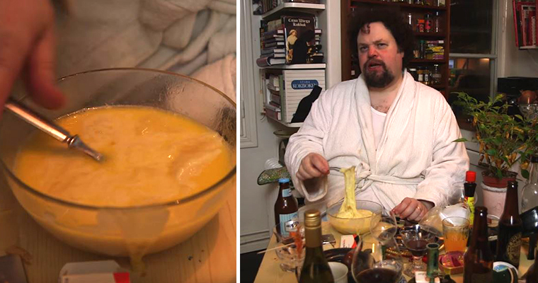

Edwards bakisost
Ingredienser: Ost (mycket), grogg och sist men inte minst dålig vett och etikett.
Steg 1 - För att tillaga Sveriges mest mytomspunna maträtt tar man först
mellan 0,5kg-1kg ost av valfir sort (helst inte för dyr).
Steg 2 - Man
lägger osten i en skål och ställer in den i mikrovågsugnen på max styrka
i några minuter.
Steg 3 - Häll i all överbliven alkohol från gårdagens
kväll i skålen.
Steg 4 - Sleva i dig!!